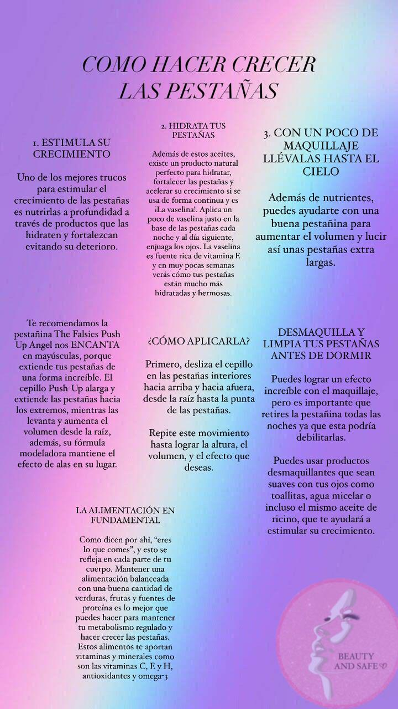

"Salvando Miradas"
¿Quienes Somos?
Ven y descubre que es este proyecto que estamos realizando.
Nuestro proyecto
enfocado en ayudar e informar
correctamente a las personas,
que han tenido una mala
experiencia con los
procedimientos de cejas y
pestañas, esto sucede porque hay personas
que se lanzan como empiricas a brindar estos
servicios pero no tienen los cuidados, medidas
de bioseguridad, ni el conocimiento necesario para
hacer un buen trabajo y debido a esto muchas personas
llegan a sufrir ciertas lesiones, irritaciones, pérdida de
su vista, o del vello de esta área .
X
Aqui tips para tus cejas y pestañas
¿Que debe tener tu
salon de belleza?

¿Como hacer crecer
tus pestañas?

Cuidado de las cejas
Cuidado de las
pestañas

Rutina facial
Kit de bioseguridad
Cuidado para
tus pestañas
pelo a pelo
© Beauty And Safe ©
Investigacion y contenido de la pagina web:
Valeria Mira
Lesly Zapata
Programacion de la pagina web:
Angelo Mejia
Te interesa hacer una pagina web?
Contactame: +57 323 303 3538